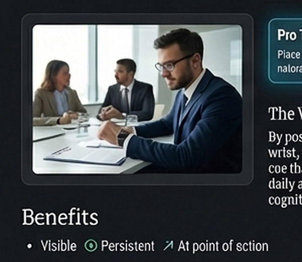

Visible
A visible cue is easier to re-check than a fleeting thought.
Prospective memory is different from remembering facts or recalling a past event. It is remembering to act later. In daily life, many of these tasks are small, repeated, and easy to lose: did I already take my medication, do I still need to send that message, did I lock the car, did I finish today's habit?
These tasks are vulnerable because they compete with whatever currently has your attention. If the cue is weak, delayed, or buried in a long notification list, the intention can disappear.

An external cue reduces the amount of memory work your brain has to do. Instead of rehearsing the intention internally, you offload it into the environment.
A visible cue is easier to re-check than a fleeting thought.
A persistent cue is better than a one-time alert for unfinished tasks.
A cue at the point of action is more useful than a cue that arrives too early.

That is why a note on the door works differently from a reminder notification you dismiss. One is still there when the action moment arrives. The same logic applies to a watch face: it sits in a place you naturally glance at throughout the day.
For many everyday tasks, the ideal reminder is not a loud interruption. It is a quiet, always-available signal.
Experience the scientific advantage of Toggle Reminder on your wrist.
View Toggle Reminder on Google Play